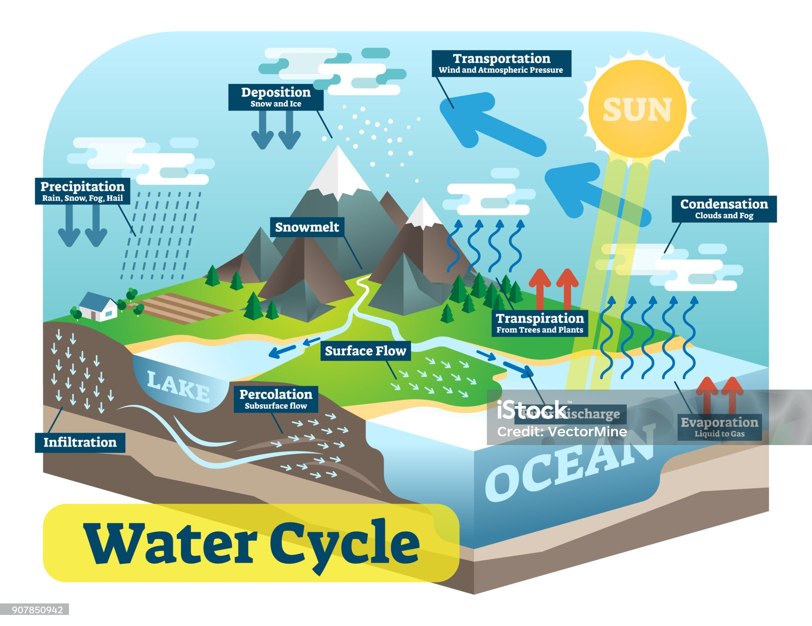

The Image of The Water Process

The Actual process of the water cycle!
The Water Cycle Song
A Video Of The Water Cycle
Earth is a truly unique in its abundance of water. Water is necessary to sustaining life on Earth, and helps tie together the Earth's lands, oceans, and atmosphere into an integrated system. Precipitation, evaporation, freezing and melting and condensation are all part of the hydrological cycle - a never-ending global process of water circulation from clouds to land, to the ocean, and back to the clouds. This cycling of water is intimately linked with energy exchanges among the atmosphere, ocean, and land that determine the Earth's climate and cause much of natural climate variability. The impacts of climate change and variability on the quality of human life occur primarily through changes in the water cycle. As stated in the National Research Council's report on Research Pathways for the Next Decade (NRC, 1999): "Water is at the heart of both the causes and effects of climate change."